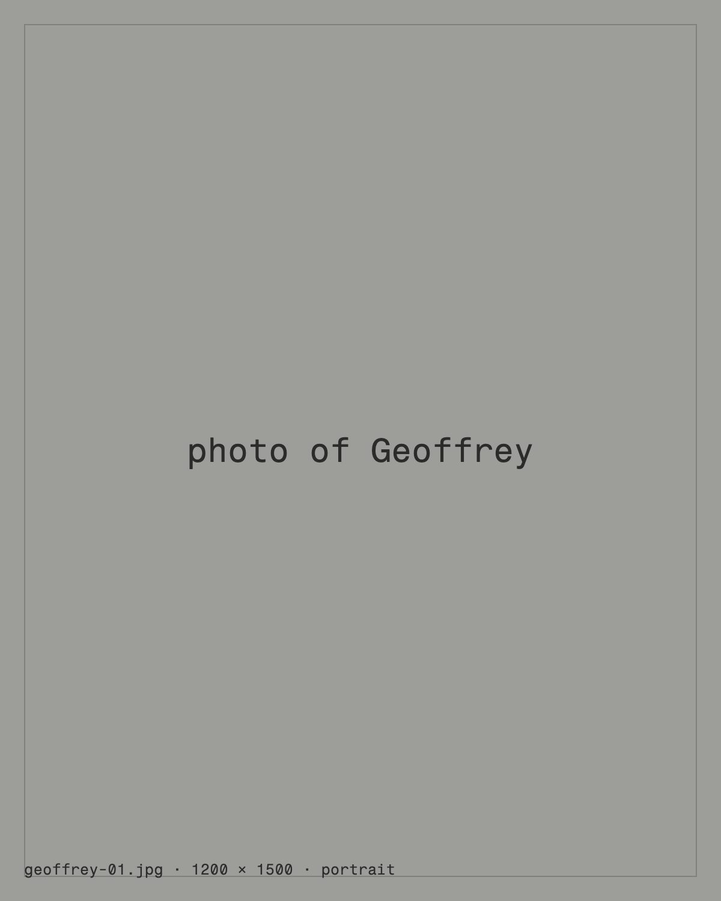
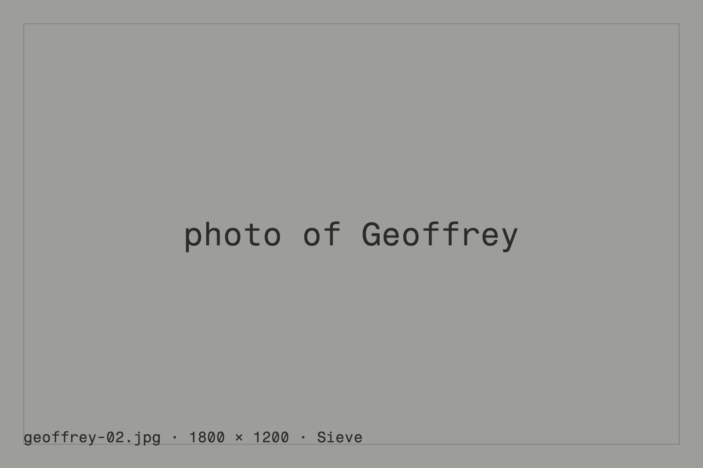
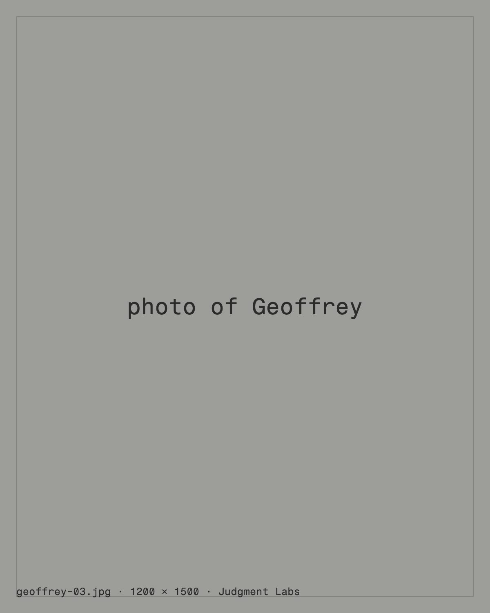
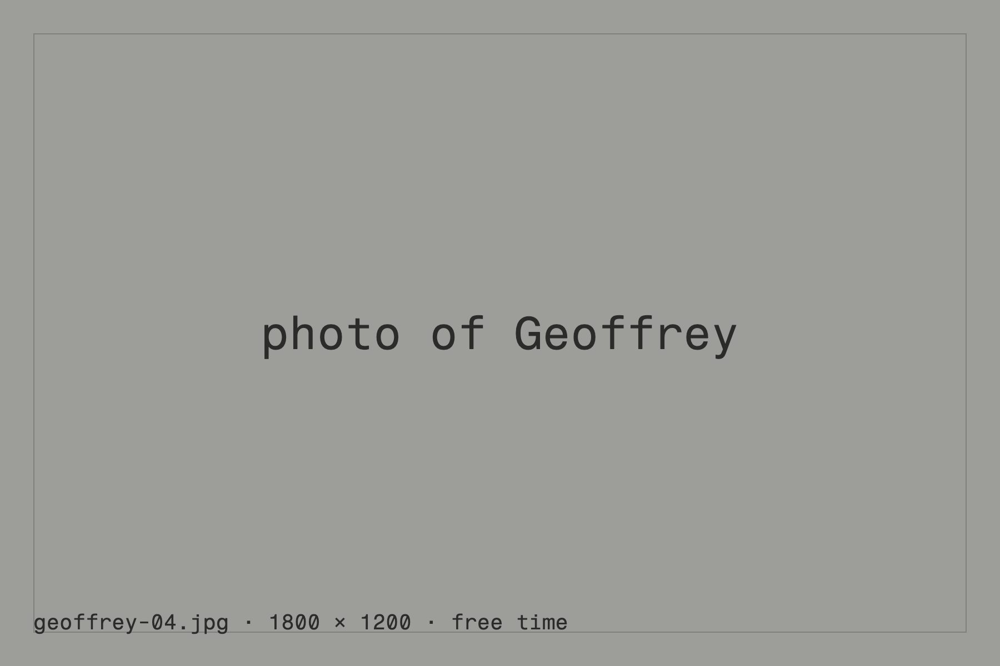

- age
- 23
- countries
- 11
- weekly saunas
- 3
- oz of greek yogurt consumed per week
- 48
// stats


// elsewhere
I'm Geoffrey, welcome to my site. Currently I'm working on product at Sieve, exploring/scaling robotics data, operations, and research for physical AI. Previously, I worked at Judgment Labs as the founding PM where I built evals and AI infra for agents.
Prior to that, I was an AC within Bain PEG in the NYC office. Before that, I interned in product & engineering roles at early-stage startups and Fortune 500 companies, and was a scout/fellow at Soma Capital, .406 Ventures, and V11.
In my free time, I like to tinker, eat clean, play guitar, and participate in any activity that makes me sweat intensely.



